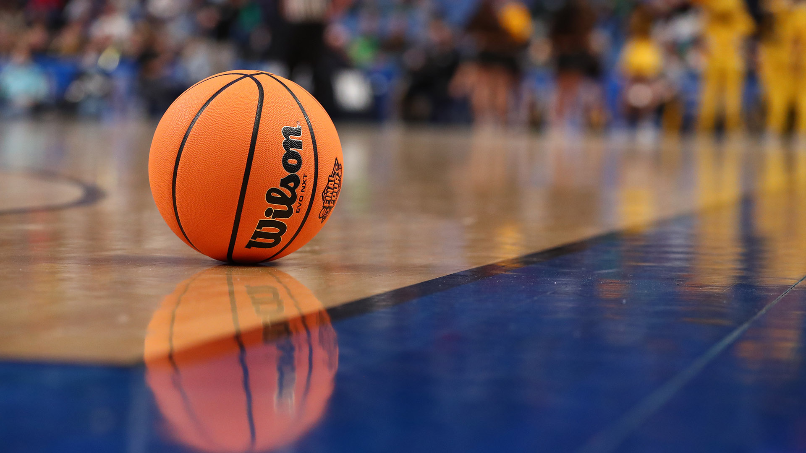

Basketball
Basketball is a team sport where two teams, typically consisting of five players each, face off on a rectangular court. The main goal is to score points by shooting a basketball through the opponent's hoop, which is 10 feet high and 18 inches in diameter. The game involves various techniques such as dribbling, passing, and shooting.
Players can score two points for a field goal, but if it's made from behind the three-point line, it's worth three points. When a foul occurs, play stops, and the fouled player gets one, two, or three free throws, each worth one point. The team with the most points at the end of the game wins. If the score is tied at the end of regulation, an overtime period is played.
Players move the ball by dribbling or passing, showcasing their skills in offense and defense. Offensive moves include layups, jump shots, and dunks, while defensive strategies involve stealing the ball, intercepting passes, and blocking shots. Violations include lifting or dragging a pivot foot without dribbling, carrying the ball, or holding it with both hands and then resuming dribbling.
The five players on each team have specific positions: center, power forward, small forward, shooting guard, and point guard. These positions vary in height, strength, and agility. Players can also engage in informal games like three-on-three, two-on-two, or one-on-one.
Basketball, created by James Naismith in 1891, has evolved into one of the world's most beloved sports. The NBA reigns as the premier professional league, drawing talent from U.S. college basketball. Globally, clubs participate in prestigious leagues like the EuroLeague. Major events, including the FIBA Basketball World Cup and Men's Olympic Basketball Tournament, showcase top national teams. Women's basketball has also flourished, with competitions like the FIBA Women's Basketball World Cup and the Women's Olympic Basketball Tournament, alongside leagues such as the WNBA and EuroLeague Women, highlighting women's basketball talent.